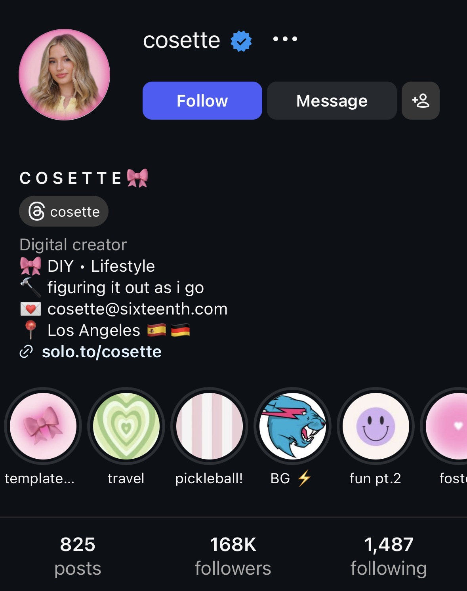
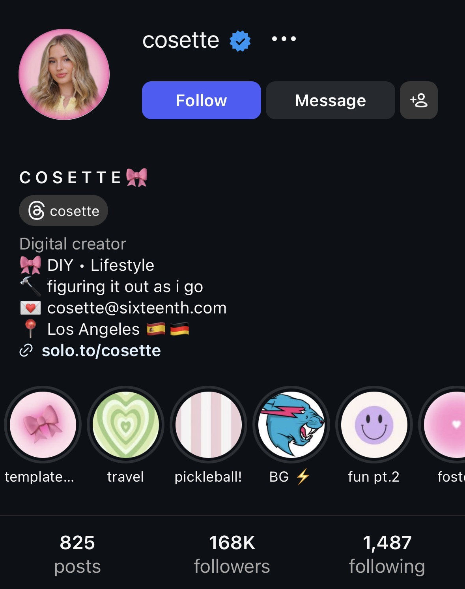
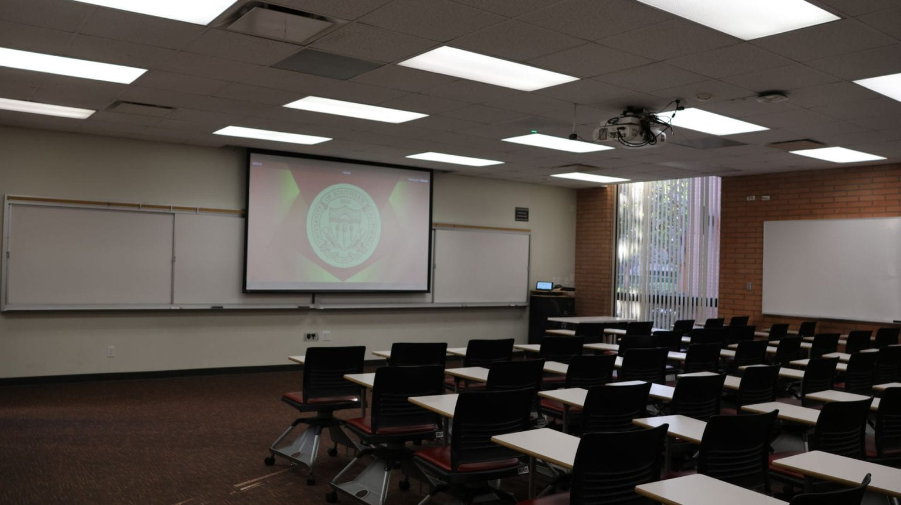

From USC Students To Full Time Creators: Alan Chikin Chow and Cosette Rinab Social Media Talks
In March 2023, two USC Alumni who went on to become very successful full-time content creators - Alan Chikin Chow (#1 YouTube Shorts Creator in the world, USC '19) and Cosette Rinab (USC '21) - came back to USC to give their advice for anyone who wants to be successful in social media.
 

I wrote notes for most creator talks that I went to at USC, but I never went back and studied or organized my notes until now. From my time studying rocket science at USC as well, I think that taking notes - and reviewing them - in the right way can make a tremendous difference in what you get out of something (as opposed to passively sitting through a lecture then expecting to remember everything for example - which is almost always NEVER the case, ESPECIALLY in something as complicated as rocket science - or even social media algorithms/strategy - lol).
I went through a similar process where I had a ton of class notes for my Astronautical Engineering Master's degree classes that I had but never revisited until I had to take my Astronautical Engineering PhD Screening Exam almost 3 years into my program. I had to go back and re-learn everything from my classes from all of the notes, homeworks, exams, and review/drill all of those materials until they became second nature to me.
I'm hoping that by going back and similarly reviewing/organizing my old notes from my various social media talks that I've attended that I'll be able to do the same and make a similar leap forward and breakthrough in my social media / entrepreneurial career finally, and that anyone who reads this can gain similar benefit as well (if they read all the way through all of these).
Without further ado, let's dive into the summaries, starting with Alan's talk.
Alan Chikin Chow (100M Subscribers as of January 2026)
As of the writing of this article in early January 2026, nearly three years after Alan Gave his talk, he is fast approaching 100 Million Subscribers on YouTube (he's currently at 98.8 million on his "Alan's Universe" Channel).
As of the talk in March 2023, I think that he had on the order of about ~20-25 Million Subscribers (+/- ~5 Million) give or take, and he started his channel in February 2020.
Alan's Subscriber Growth Over Time
So his Subscriber Growth was pretty exponential - with Alan going from 0 to 100k followers in 1.5 years, then 1 to 10 million in just over in the year after that, and going from 10 to 20 million in 6 months. That comprised the first approximately three years on YouTube, then in the nearly three years since, he's gone from 20 million subs to 100 million on YouTube alone.
Intro On Alan
I ran into Alan in the hallway before he came in for his talk and he introduced himself.
We reminisced over his time at USC and how it let him to where he is now.
He was the head of community for the social media club that we were both in (with him graduating before I started at USC) and he loved his time on E-Board for the club.
He joined the club in Spring 2018 (it was founded in Fall 2017, so he was the second cohort), and he mentioned that he formed tight connections with everyone else on E-Board and that they kept in touch after college and that they all became successful - which is definitely inspiring to me (hopefully this turns out to be true for my cohort as well!).
Alan's Mission Statement as a Creator
Alan has a really cool mission statement as a creator, which will also inspire my own going forward, and it is (at least as of the time of his 2023 talk) as follows:
Alan is a "Creator with a mission to unite an audience of all backgrounds and identities through laughter."
That's a pretty cool mission statement!
Alan is The NUMBER ONE YouTube Shorts Creator in The World
As of March 2023, Alan was the number ONE YouTube Shorts creator both in the world and in the U.S. which is super cool, even surpassing Mr. Beast.
According to online sources, he is STILL the number one YouTube Shorts creator as of January 2026, even OVER Mr. Beast, which is pretty amazing given Mr. Beast's immense popularity.
If you add up both Alan's and Mr Beast's total lifetime views between both longform and short-form videos, Alan's Universe has over 58 Billion Total Lifetime Views since February 2020 as of January 2026, and Mr Beast's channel has over 102 Billion Total Lifetime Views since he started his Main Channel as of January 2026.
I'm not sure how to seperate analytics for short and long form videos, but the fact that even if you include Mr Beast's longform videos, that Alan is very close to Mr. Beast is pretty remarkable!
Alan's Early Days
As mentioned, Alan was one of the first members of a social media club that formed on campus in 2017, with him being a part of the second cohort in 2018.
Academically he was a Business Major with a Minor in Screenwriting.
He started making TikToks once he joined the club, with Markian Benhamou (the founder of that club) and Mia Finney (one of the first members) being the two people who taight him the ropes of content creation initially.
Back in 2018, no one was creating, so going viral was very easy.
Markian taught alan how to build a business around content creation, and Alan even worked for him for a bit after graduating from USC in 2019.
There, Alan learned from Markian how to package content in ways that you could monetize it.
Learning How To Build Businesses Around Followers is an IMPORTANT Part of Every Creator's Journey
Alan emphasized that learning how to build businesses around followers is a very important part of your journey.
You can leverage it into several different things, with examples that he gave being deals for TV, Film, Podcasting, and even Late Night Appearances on shows like Kimmel or Fallon.
I'm not sure why Fallon/Kimmel were brought up, but that was in my notes. He also mentioned that most of the young people on these shows all come from social media now.
As Side Note: This wasn't discussed in the talk, but since I was curious, I looked up WHY creators would want to appear on late-night TV. For traditional actors and movie stars, it made sense since they were trying to adversite or promote their movies. But For creators, while there could be several reasons, including promoting some sort of project (especially if they're breaking into something more traditional), the number one reason seems like it would be credentialing/legitimacy. If you become big enough to make it onto bigtime late-night TV (with Steven Bartlett being a recent example), then it legitimizes you which gives you a good amount of leverage. On the show's end, bringing the creator on allows them to access new audiences - especially Gen Z - which could help them expand their own audience and reach as well. Creators bring that built-in distribution.
Succifce to say, you can leverage your following in a ton of different ways.
What Makes a Viral Video?
Alan started off by explaining that he started making his first viral videos when he was at USC by booking out rooms in our business building, Fertita hall (and possibly other places on campus too).
The Three Ingredients To a Vital Video/Short Are:
- Hook
- Retention
- Repeated Viewing
Hook
Analyzing Alan's videos through this lens especially would probably be a good way to study and get good at these very fast.
In the talk, we probably went over a video of his analyzing each of these three facets, with him first going over the hook example as follows:
In the example, the video was "would your boyfriend do this" (or something like that), and his analysis of the hook was that the base reality of a relationship is establishes, conflict happens, and an antagonist is established as well.
Retention
The hook, setup, and situation make you wonder what will happen to her, and see the resultion of that situation, which gives him an almost 100% watch time on these videos.
For retention, make sure you setup a situaiton that makes people want to see the resolution at the end of the video.
Repeated Viewership
He LOVES having a good joke as the ending for his videos.
Because, if there's a joke or a funny ending, they'll want to watch it again.
(As a side note, this joke at the end is called the blow beat - and/or button - in Sketch Comedy and is something you see in nearly every traditional SNL sketch.)
You want to end with something so funny or unexpected that it reframes the whole video.
A great blow beat/button creates repeat viewing by making the audience want to immediately rewatch the sketch/video with new context.
You want to create a blow-beat/button that changes the viewer's perspective of what they thought the "game" of the sketch/short was, which will prompt them to want to rewatch it through a new perspective.
If you're interested in exploring this more, paste this section AND also my entire sketch comedy article (with all of the examples) into ChatGPT and have it help you analyze those examples to see why the blow-beat/button in those would prompt someone to be a repeat viewer and why. You could probably do the same for certain types of short-form content as well which are relevant to your niche or format.
What are his YouTube Demographics?
Alan's YouTube demographics breakdown says that ages 24-35 are his highest viewers, BUT his hunch is that it's probably actually just kids using their parents' accounts.
Alan mentioned earlier in his talk that his content is primarily aimed towards kids.
He mentioned that YouTube is diverse - there's audience members of all different backgrounds and identities, so you can make videos that cater to anyone.
His U.S. vs International Viewership
The U.S. is by far his biggest audience, but he mentioned that he has viewers from a lot of other countries too, particularly since many of his shorts don't involve talking, which takes advantage of the "Khaby Lame Effect" (removing the language barrier) which makes videos more accessible to audiences around the world.
Alan Shows Us How He Films (Live Example)
Next, Alan actually did an exercise where he filmed a video with us and showed us how much effort goes into filming a video.
He said that many of his shorts involve quite a few shots, with many going up to 70+ shots for maximum engagement.
While I don't remember exactly what the example video was about, I think that it was likely about a student creating a disruption in a classroom (the talk was in a classroom at USC, after all), with the teacher's increasingly exaggerated interactions creating drama/comedy (with no dialogue).
The classroom we were in looked like this:
The meetings this semester were in Grace Ford Salvatori Hall (GFS) at the University of Southern California (specifically, room 116 as pictured above).
All of the shots that we went through for this simple video were:
- 3 shots: 1 wide, 1 close-up, 1 for spill
- Teacher reaction + walking
- Pulling away
- Pulling out of classroom
- Knocking out another bottle
- Come back in
- Another shot inside
- Another shot outside with discipline
This is a simpler/shorter video, but as you can see, there were quite a few interesting/complicated shots!
While he didn't say this, as an exercise, if you want to make videos in his style for example, you should watch his videos and similarly write out all of the shots that he likely did like we did for the example video above.
This will likely give you a better feel for making your own shots better going forward.
When Alan first started, he mentioned that he edited everything himself for a while; although now (as of 2023, and definitely as of 2026), he has editors since he cranks out so much volume.
As of 2023, he said that he still ideated himself - he still holds onto that - but he did mention that his next hire was likely going to be a writer or team of writers because of the sheer volume.
Creating Viral Videos On Purpose is EASY
Alan also mentioned that he thinks that creating viral videos on purpose is EASY if you create what the platforms want from their creators (and once you do it enough times ofc).
Q&A
How does it feel to have acheived the success that he has?
One of the club members, Jason, asked how it feels to have achieved the success that he has. Alan had a very interesting answer (as of 2023, so it might have changed).
Alan answered saying, interestingly enough, that he doesn't feel like he's "made it."
The reason being that your peers are often people in the same category as you, which makes it feel normal.
How he edits his videos?
As of 2023, his editor used Final Cut most of the time (sometimes adobe), and sometimes they do some final touch ups in CapCut.
INCLUDE Sensory/Stimulating Colors
Something SUPER interesting he mentioned is that he always increases the "saturation" setting by 10 points or more when he edits (e.g. if he edits in CapCut) since it increases color, in particular colors that will be most stimulating from a sensory perspective (e.g. brights, etc.).
This is super interesting, and a bright-color / the effect of color on human visual perception is probably a fascinating rabbit hole to dive into with regards to content.
Alan's Ultimate Goal
As of 2023, Alan's ultimate goal was to create a multifaceted media company in film, digital, and television.
Potential platforms to move to?
YouTube longform is a great one to focus on (if you have the time/resources); all of his friends that have mansions are on longform.
(We can see that Steven He - from his Nov 2025 talk at USC - followed this trend and leaned HEAVILY into longform; Alan has done the same since)
The only main downside, he said, is that people busy in college may not be able to compete as easily since longform "is a different beast."
As of the time of the talk, YouTube shorts was a great opportunity, but Facebook Reels was an extremely underutilized opportunity.
How to go viral on something without a storyline?
The hook aspect still applies for sure.
For example, for a scenery creator, the best scene should be in the beginning.
Either way, every kind of video has a story still.
Like if it's "top 10 places in the Maldives," they'll definitely want to stick around and see number 1 for example.
How to get better at Storytelling, Humor?
Emulate people who have a big following in your space. (this is similar advice that Steven He later gave in 2025)
He's also a BIG proponent of delivering the information through skits (like his videos are) since they're a much higher engagement, better way to get traction.
And in addition to putting the info in skit form, also put the info at the end of the skit as well (or during the payoff or emotional height of the skit), not at the beginning.
He's excited to see where life takes all of us
He mentioned how he thought a lot of the people at his talk were super talented and mentioned how he was super excited for all of our futures.
The Economics of Superstars
Alan also mentioned how "the economics of superstars" applies to social media especially, which is where the top ~0.1% of creators makes 99% of the money.As of 2026, there's another stat which is that only ~4% of content creators make over $100,000 per year, which is an insanely low number.
And even out of those, it's likely a lot like being an NFL or NBA player, where that level of income is only going to come in for a few years before things dry up.
Zack Honarvar talked about this in his USC talk - that for most creators it will be like being an athlete with a limited lifespan, so it's critical to have a plan to leverage that into something more sustainable long term.
Summary
Alan is one of the biggest YouTube shorts creators on the planet - he happened to graduate from USC just like I (and everyone else in the room) did - and he gave us a lot of great and actionable insights for being a successful content creator.
Cosette Rinab Talk & Presentatino - "How To Work With Brands As A Creator"
Our next speaker of the day was Cosette Rinab, who is also a USC Alumni (Class of '21) and full time content creator and consultant.
She was also one of the founding members of the social media club that I was in at USC and later president of the club.
She gave a really good presentation titles "how to work with brands as a creator" which gave a lot of really good advice and insights about how to navigate the creator world.
Intro
She had a very detailed powerpoint presentation, and started off by introducing herself.She started as a creator when she was at USC, starting on TikTok, and she started as a part of a social media club challenge of recreating an old viral vine video.
Most of us were either somewhat successful creators or aspiring creators (but not quite at her level), so she encouraged us all to ask questions about all things related to being successful as a creator.
She mentioned that she's from NYC, but has lived in LA since she came for USC.
When she posted her first TikTok as a part of the vine challenge, it was in November of 2018, and TikTok had JUST became "TikTok" (no longer music.ly), and she got a million views overnight.
She eventually became a full time creator by the time she graduated over 2 years later, making money from both her personal brand and from consulting with companies.
She thinks that TikTok succeeds (as of March 2023) because everything on there is so raw and authentic.
Her favorite brand partner to that point had been Amazon, specifically, Amazon product reviews.
She also mentioned that she's been involved in the entertainment industry since she was little, through her parents and stuff.
How USC Prepared Her For Her Career As A Creator
She mentioned that she was overwhelmed at USC balancing classes with content, as she was sure we all are (me especially so since I'm engineering!)
Markian (mentioned earlier in the article) was the founder and first president of the USC social media club, and Cosette was the second president.
She mentioned that the club was pivotal for her career and empasized that we should definitely take advantage of the opportunities we get here.
She mentioned that we should ALWAYS connect with people who come in and speak at USC and also take advantage of those connections.
Marketing Yourself
One of the biggest points of the talk is that she mentioned that it's INCREDIBLY IMPORTANT to take marketing yourself seriously.
It's also something that's a lot of hard work.
Specifically, she gave some pointers such as:
- Be Unique - There's millions of creators at this point; what makes your videos different?
- Be Proactive - For guest speakers for example or people you meet at events, ALWAYS find them on linkedin and conneect after; stay in touch
- Be Consistent
Closing Brand Deals + Contracts
Always make sure to read the entire contract for brand deals.
Get really good at reading them or have a trusted lawyer or someone else read over it.
ALWAYS over deliver on what the contract asks you to do (or edit it if needed).
Make sure that it's a pleasure to work with you and make sure that they want to work with you again.
Through internships and now consulting and being a full time creator, she's seen things from both the brand side and creator side.
Lots of creators have a big ego and are hard to work with, which will often make the brand put them on a blacklist (yes, these are real, so be careful!).
Make a good impression with every person you work with!
And don't burn bridges.
With the creator world especially, people hop around and it's a very small space.
Always be professional.
And for contracts specifically, always have everything in writing.
Maintaining Relationships
Always introduce yourself to people.
Like if you're at an event for example, ALWAYS introduce yourself even to the point of contact who invited you to the event, and thank them for hosting you.
For example, she was at a movie premiere the other night (the scream vi premiere) and she found the woman who invited her and introduced herself.
Always be profesisonal with following up.
If it's someone who you connect with on a personal level, do that, otherwise, do LinkedIn.
ALWAYS thank the brand after attending the event - usually through a follow up email.
How she got traction in consulting.
Brands will often come to her to consult about hiring creators, how to go about their social media strategy, or sometimes even hire her if they want to.
As of her talk in 2023, the websites she used for consulting were Clarity and Mentor Pass.
She thinks that in addition to her organic social media, that Twitter and LinkedIn could be good places to find clients as well.
She got in a lot of press early on, including in an article titled "Want a million followers on TikTok? Ask this 21 year old!" and a number of others from top news outlets.
She got a lot of inbound due to these articles, and she stressed that being in articles and reputable stories are a big part of legitimizing a creator (especially with respect to getting consulting gigs and other opportunities).
More on Clarity
With Clarity specifically, Cosette mentioned that she charges $509 per hour of her time with most social media consulting clients.
The interesting thing about Clarity is that it charges per minute of the video as it goes overtime.
Another person who attended the talk, Justin Leusner visiting from Penn State, mentioned that he similarly did consulting calls mostly for short-form content such as TikTok etc. with mostly sports startups. He mentioned that he mostly blocked out mondays (at the time) for those calls.
Back to Cosette, she mentioned that she signs on clients for 3 month contracts much of the time, with the goal for the company to be independent and doing well on their own by the end of the contract.
She also sells an e-book for her clients as well.
How She Schedules Things on Her Calendar
She also mentioned that she's a meticulous planner and scheduler, with everything that she's going to do in a week or particular day all planned down to the minute on her calendar (even non-work/fun stuff too).
She even mentioned how she gets super detailed with color coding things and she thinks that being super organized in this way makes her much more productive than not doing so.
Overall, she mentioned how she's extremely organized and blocks out time blocks and even days of the week for most things (something I should start doing myself!).
She mentioned she does (at least in this stage of her creator journey) take weekends completely off of calls or content creation though in order to recharge.
Justin also mentioned how he similarly schedules things meticulously as well.
One more thing is that she mentioned that she schedules videos with google sheets but still posts them manually across platforms (rather than automatically).
Her Favorite Brand Deal
She also talked about her favorite brand deal (as of 2023) which I'll also include here as inspiration for anyone who wants to become a creator or creator-entrepreneur.
Her favorite brand deal was when Dolce and Gabbana flew her out to Milan (where she ended up bringing her mom as her +1).
There were people backstage at the event who said they love her videos.
Cosette mentioned that this is the first time that her mom respected her career which was a neat moment since, as many people early in their tiktok careers do, many people questioned whether it was a "real"/legitimate career.
This was also RIGHT before covid started in 2020, and it was only ~a year and a half into her career and still very early in the entire TikTok lifecycle, so it's understandable that people then wouldn't have understoor that it could be a legitimate career yet.
Where She Wants To Take Things In Five Years?
Cosette also talked about where she wants to take things in the next 1-5 years, and she gave some interesting answers.
I didn't write down most things she mentioned here, but the most interesting thing she mentioned is that she wants to also have another brand outside of this, which is fascinating.
On a personal note, in the nearly three years since, I've actually seen this play out very successfully with several other creators who I know - including Justice Shepard who went from "Justice The Tutor" which was doing well but stalling a bit to pivoting most of his attention to his new "Justice Buys" brand which is a seperate page with millions of followrs and much more engagement (and likely income); and another example being Eric Suarez - a successful interview creator who STILL has high engagement etc - but who has also successfully diversified into making several 6+ figure multi-million follower AI Personality Short-form channels including the highly popular Granny Spills on Instagram. who has over 1.9 Million Followers as of January 2026.
Not that EVERY creator has to follow this, but looking back, it's super cool that Cosette saw this trend - of successful creators (many of which are essentially multi-media production companies at this point) - diversifying with several different brands and/or channels.
Summary
Overall, Cosette gave a VERY GOOD talk about her advice for succeeding as a creator, offered a bunch of good nuggets of advice, she was a very articulate/impressive/charasmatic speaker, and she also gave really good advice for how to work with brands and make them want to work with you again - all very important things when going on to become a successful creator!